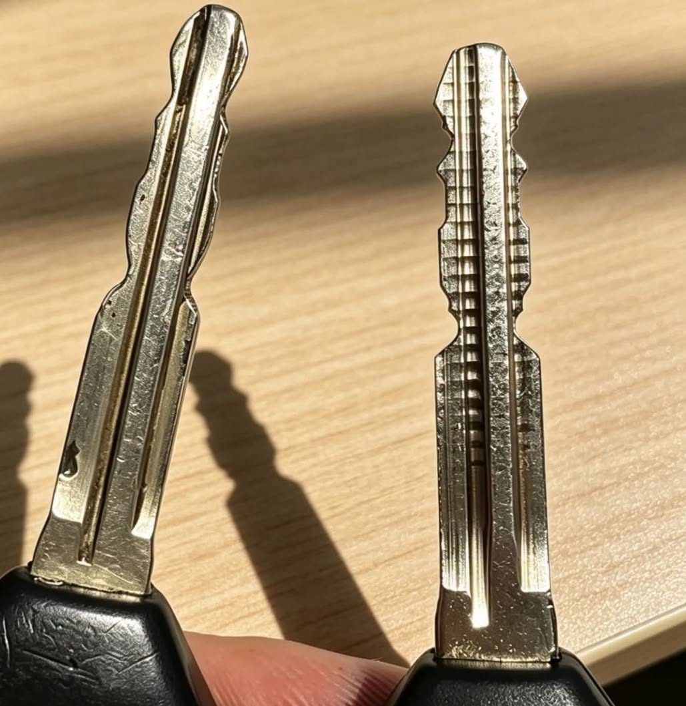
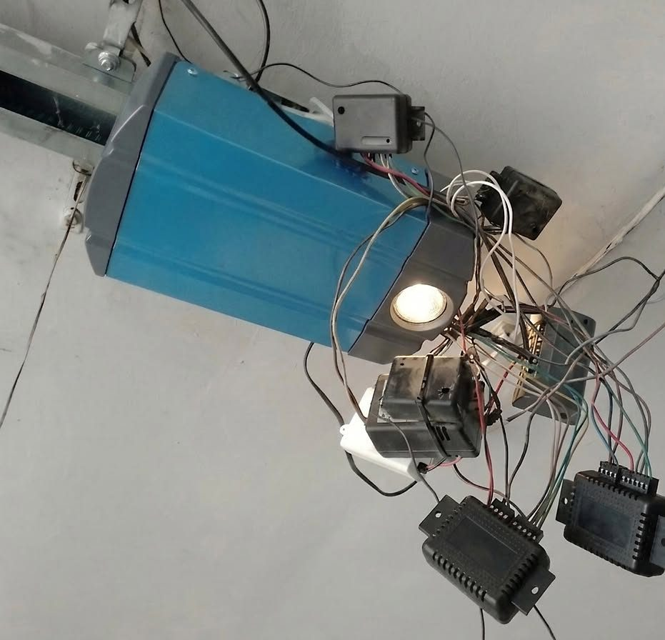
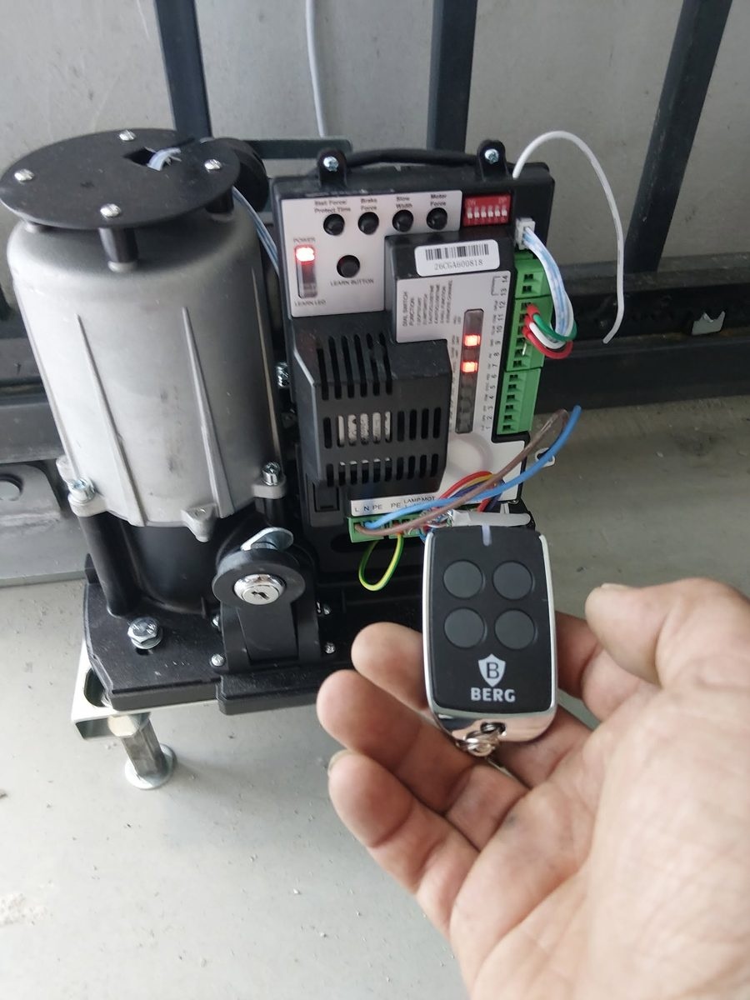
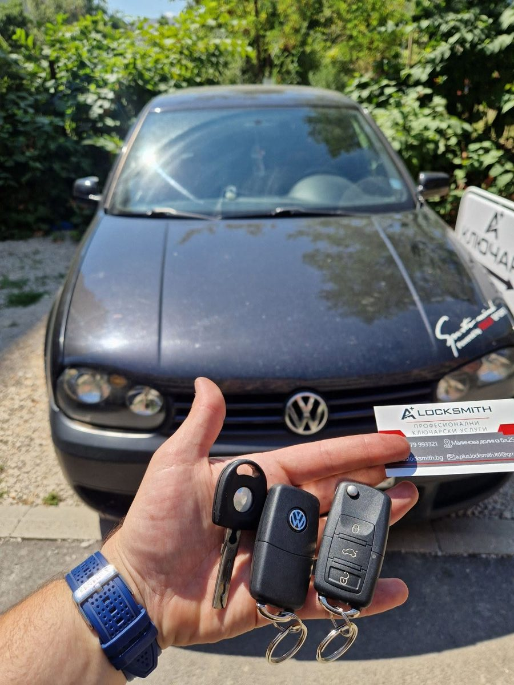
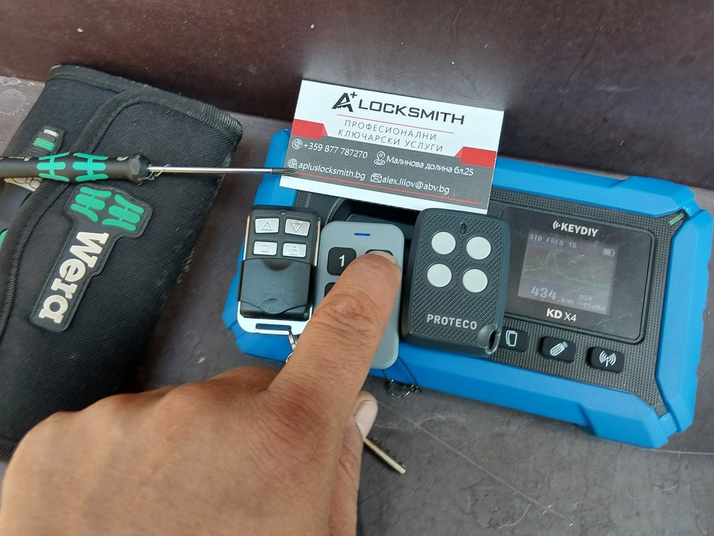
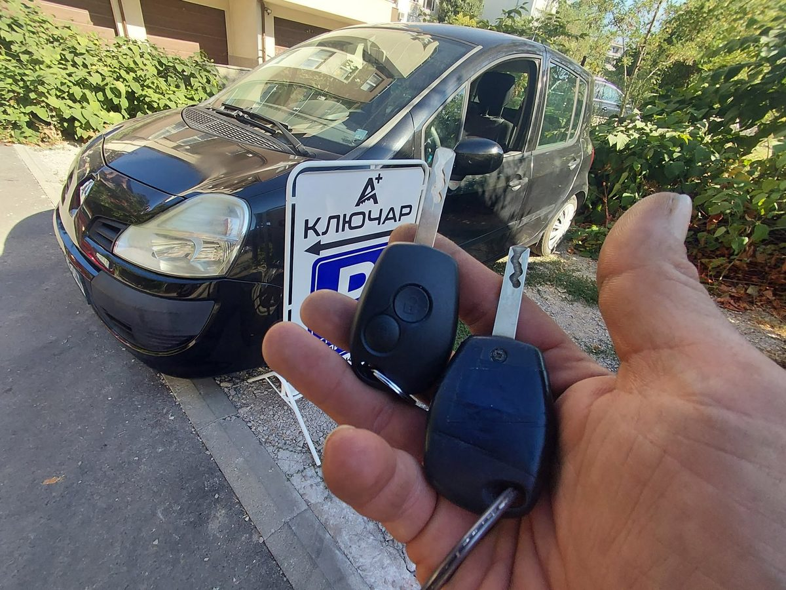
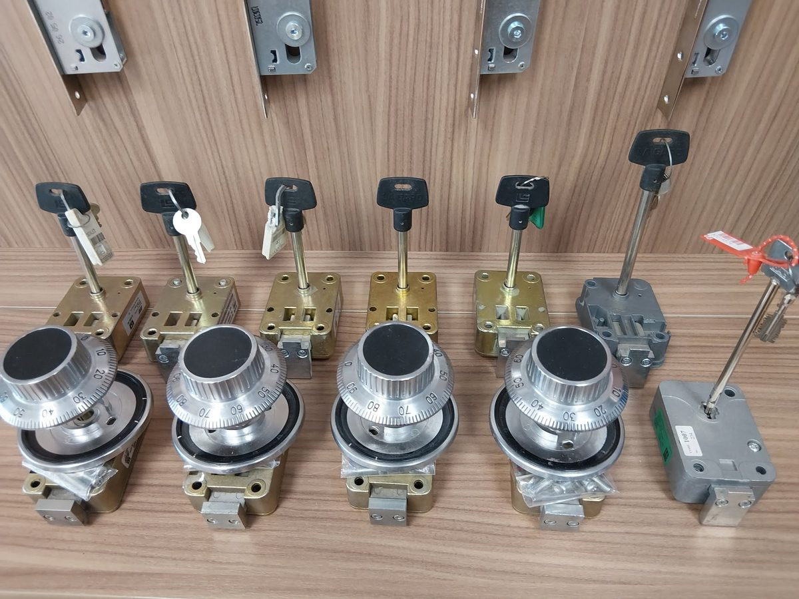
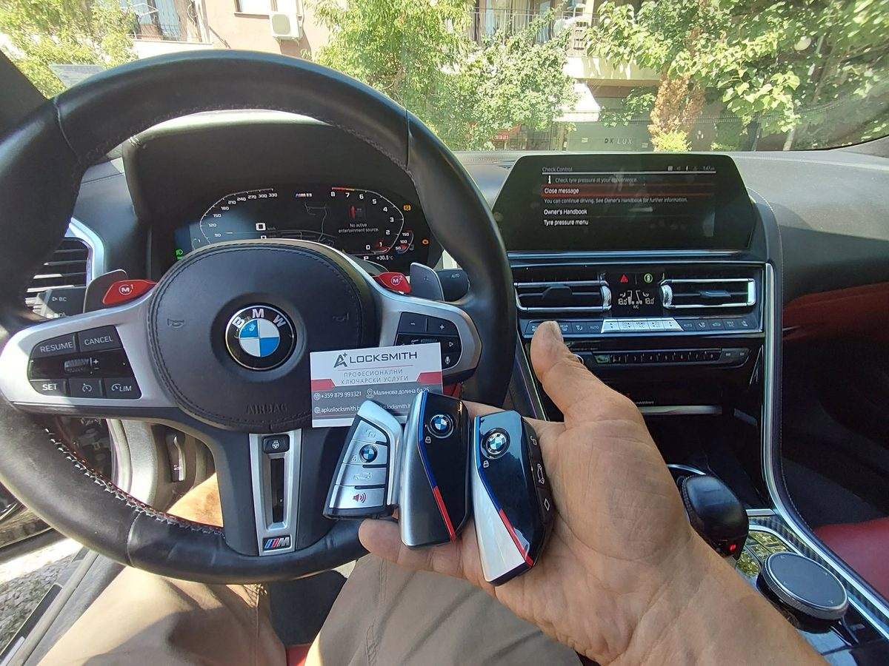

Автоключарски услуги
Изгубени ключове за Kia Niro — нов смарт ключ на място за минути
Собственик на електрическа Kia Niro остана без нито един работещ ключ — ситуация, която обикновено означава репатрак и дни чакане в сервиз.
Прочети случая →
Ключът за колата се върти все по-трудно в контакта и всяко пускане на двигателя се превръща в дребно изпитание. Причината почти никога не е в патрона.
Прочети случая →
Всяко ново дистанционно с годините добавя по още един приемник над мотора на бариерата или портала. Резултатът рядко изглежда добре — и почти никога не работи надеждно.
Прочети случая →Собственик на електрическа Kia Niro остана без нито един работещ ключ — ситуация, която обикновено означава репатрак и дни чакане в сервиз.
Прочети случая →
Нов член на семейството, изгубено дистанционно или просто искате резервно — обучаваме допълнителни дистанционни за автоматика BERG бързо и на място.
Прочети случая →
Фабричното дистанционно на този Volkswagen Golf IV беше спряло да отваря и заключва надеждно — а причината се оказа остарял комфорт модул.
Прочети случая →
Металният ключ е нарязан, вратата се отваря — защо тогава двигателят не пали? Истината зад цената и времето за изработка на автомобилен ключ.
Прочети случая →
Ролетна гаражна врата и автоматика PROTECO на портала — и отново две различни дистанционни в джоба? Можем да ги комбинираме в едно.
Прочети случая →
Без чакане, без записване седмица напред — вторият ключ за този Renault Modus беше нарязан и програмиран директно в ателието ни.
Прочети случая →
Сдобихме се с няколко сейфови брави LaGard 3300 и 2200, снети от банкомати — рядка възможност да разгледате истински банков механизъм отблизо.
Прочети случая →
BDC3 е най-новата система на BMW за ключове и имобилайзер — с много по-висока защита от старите CAS модули. Ето как протече програмирането на този M8.
Прочети случая →